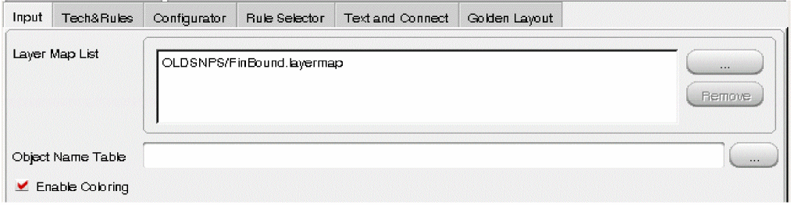
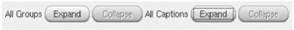

3
All about Design Rules: Snapshot
This chapter covers basic concepts of snapshots, its definition and the type of snapshot directories. The content of this chapter is organized as follows:
- Snapshot Definition and Files
- Snapshot Directory Types and Customizations
- Quick Start: Create Snapshot
- Pegasus Interactive Snapshot Creator Form
- Manage Snapshots
- Portability of Snapshots
- Checking that Snapshot is Generated by Up-to-Date DK Version
Snapshot Definition and Files
A snapshot captures design rules in a compiled binary format, which only Pegasus understands. This format allows Pegasus the direct access to design rules during DRC without re-compiling design rules from the rule deck. The advantages of using snapshot over rule deck are:
- Run time improvement since rule compilation are eliminated
- Fast switching between different snapshots
- Ensure rules stored in the snapshot reflect the creator's initial intent
- Re-usability of custom rule sets
Following table gives an overview of these snapshot files.
Table 3-1 Snapshot Files Outline
| Snapshot Files | Description |
|---|---|
In order for Pegasus Interactive to work properly, a set of snapshot related files are created by the tool either through interactive or batch snapshot creation. Seven files are created by Pegasus Interactive and the filename is formatted as snapshot name appended with specific file type suffix: .preset, .tag, .cap, .snp, .layermap, .objectmap and .sum.
For dynamic rule selection, Pegasus Interactive relies on information collected from .tag, .cap and .layermap /.objectmap. Since polygons drawn in Virtuoso are represented by Layer-Purpose pairs defined in the technology file, Pegasus Interactive transfers these LPP specific polygons to their Layer-Datatype stream pair equivalents and then passes them directly to Pegasus. This is a direct communication between Virtuoso and Pegasus through Pegasus Interactive interface socket. In addition to transporting geometry data, Pegasus Interactive performs rule selection based on layer visibility by relying on information stored in the .cap and .tag files. The .tag file contains rule specific layers check lookup table. All the layers are represented by Layer-Datatype stream pair. Following is the general syntax declared in .tag file.
<Rule Caption> <# of different layer pair's check>
<LayerStream1#> <LayerStream2#> <Datatype1#> <Datatype2#>
:
Following example shows three different rule captions: M1.Spacing.1, M1.Width.1, and M1.Area.1. There are also three layer check conditions:
- Gray color M1:drawing to Gray M1:drawing
- Mask1 specific M1:drawing to Mask1 specific M1:drawing
- Mask2 specific M2:drawing to Mask2 specific M1:drawing
Rule is selected for DRC if any of the above interlayer check combinations is detected in the Palette.
Figure 3-1 Layer Lookup Example
For the .cap file, it contains rule types that Pegasus Interactive refers to for either density or connectivity type rules exclusion. Below example shows a typical content of .cap file. Its rule status' syntax is composed as following:
<Select Tag> <Rule Name> <Rule Caption's Line Count> <Rule Type>
<Rule Caption>
:
Figure 3-2 .cap general content

The .preset file is the configuration file that contains the Snapshot Creator Form setting. It is only for GUI application and is not understood by Pegasus engine. The advantage of having this .preset file is allowing you to load settings that generate current active snapshot while launching Snapshot Creator GUI. In addition to .tag, Pegasus Interactive refers to .cap file to ensure rule selection only on rules existed in the snapshot (.snp).
Finally .sum is for Pegasus Interactive to check snapshot files completeness. For a given snapshot validity check, Pegasus Interactive does not populate it in the snapshot combo field if file information recorded in .sum mismatches from its detected files.
Snapshot Directory Types and Customizations
For the interactive snapshot creation, Pegasus Interactive by default stores generated snapshot files under .cadence/pegasus/<userid>/presets/pegasusint/snapshot. This is defined as the local snapshot directory. Furthermore, the local snapshot directory is explicitly created per userid. For a given working space, there may be more than one user specific snapshot directories stored under .cadence/pegasus. However, Pegasus Interactive only checks and loads snapshots from the snapshot directory matched current user information that is queried through ‘echo $user’ or ‘whoami’.
During Pegasus Interactive initialization, it first examines the content of this snapshot directory. If any pre-existing snapshot is found, it proceeds to perform snapshot files validity and version checks. If the potential snapshot passes these checks, it is included in the Pegasus Interactive's snapshot drop-down list. Otherwise, Pegasus Interactive issues warning messages in CIW and this non-compliant snapshot is excluded from the snapshot drop-down list.
In general, snapshot creation is a one-time setup. Re-usability of pre-existing snapshots in the local snapshot directory is guaranteed as long as the snapshot passes snapshot compatibility and file validity checks.
Pegasus Interactive allows you to define one or multiple snapshot directories through PegasusInt_SnapshotsDirs. Once this shell environmental variable is set, Pegasus Interactive checks and honors the contents of snapshot directories declared through this shell variable. If the snapshot directory is not available, Pegasus Interactive creates the snapshot directory automatically. However, this setting overrides the default snapshot directory. In other words, if default local snapshot directory path is not part of PegasusInt_SnapshotsDirs, Pegasus Interactive excludes it from mandatory checks.
To ensure the default local snapshot as part of user-defined snapshot directories, you can include it as part of declaration as shown below in .cdsinit:
Figure 3-3 Example of declaring user specific snapshot directories

PegasusInt_SnapshotsDirs supports path inputs containing following syntax:
Pegasus Interactive checks path validity and displays the absolute snapshot directory path in the Pegasus Interactive Snapshot Creator and Pegasus Interactive Manage field. The order of directory paths in PegasusInt_SnapshotsDirs dictates its display order in both of Pegasus Interactive Snapshot Creator and Pegasus Interactive Manage field.
Quick Start: Create Snapshot
This section introduces different ways of creating snapshots
- Interactive Creation for the first time via Pegasus Interactive Snapshot Creator
- Create a snapshot based on a pre-existing preset file
- Create a snapshot from current snapshot setting
First Time
Pegasus Interactive Snapshot Creator allows you to interactively create the snapshot. It can be invoked through the Create Snapshot button under the Pegasus Interactive Run Options.
Figure 3-4 Invoke Pegasus Interactive Snapshot Creator GUI

To generate a snapshot using Pegasus Interactive Snapshot Creator, three minimum inputs are required:
Assuming no technology is set up, Pegasus Interactive flags missing required inputs visually by boxing fields with the red highlight. Once the cursor hovers over the red-box, error message is displayed as a tooltip. Following example illustrates error dictated by the interface. Till required inputs are incomplete, GUI prevents you from creating a snapshot.
Figure 3-5 Input Validity Check
To generate a snapshot, enter the required inputs in Pegasus Interactive Snapshot Creator. Then click Apply or OK to invoke snapshot creation. During Snapshot Creation, following popup box indicates the progress of snapshot generation:
Figure 3-6 Snapshot Creation in Process

The newly created snapshot is automatically populated under Pegasus Interactive toolbar's snapshot combo field.
From Preset
The preset file contains the configuration setup that can be loaded into Pegasus Interactive Snapshot Creator. As long as the syntax in the preset file is supported by Pegasus Interactive, its setup value will be populated in the GUI.
To load the preset, you can interactively click the Load Presets icon on the File toolbar or File -> Load Presets.
Figure 3-7 Invoke load presets GUI

It opens a file searching form. For the current Look in directory, files' name with suffix .preset are populated in the window. Current Look in directory is initially set to current snapshot directory populated under the Snapshot Path field. You can navigate to any of available snapshot directory content by either selecting it from the left directory list field or through file searching utility provided by this GUI. These available snapshot directories are determined by PegasusInt_SnapshotsDirs.
Figure 3-8 Loading Presets GUI
Once the desired preset file is located, click Open. It loads the Pegasus Interactive Snapshot Creator contents based on the selected preset file. After successfully loading the preset, the loading status is displayed at the bottom of Pegasus Interactive Snapshot Creator.
Figure 3-9 Preset loading status
From Current Active Snapshot Setting
Similar to creating snapshot from a preset file, Pegasus Interactive allows you to load current active snapshot setting during Snapshot Creator invocation. The advantage of this feature is to allow you to further create a snapshot from a reference snapshot setting.
Figure 3-10 Load current snapshot setting
This option is enabled by default when Pegasus Interactive identifies the current active snapshot.
Pegasus Interactive Snapshot Creator Form
This form is another derivation of Pegasus run submission form. However, its contents are specific to Pegasus Interactive snapshot creation only. You can invoke this GUI within Virtuoso session or standalone through pegasusgui invocation utility. You can refer to Appendix A - Preset to Snapshot Batch Migration for standalone GUI invocation.
Similar to Pegasus submission form, Pegasus Interactive Snapshot Creator GUI has a built-in intelligence that checks on input validity before generating snapshots. If any required input is missing, fields in question are enclosed with red box highlights. The error message is displayed as a tooltip when the cursor is hovered over each of the red boxed field.
This GUI fields are grouped as following:
Snapshot Content Customization Field
Right above the Output field, six tabs are available for customization. These options allow you to specify DRC criteria that will be stored in the snapshot.
- Input: Defines polygon handling information used between Virtuoso and Pegasus.
- Tech & Rules: Defines technology design rules deck.
- Configurator: Part of technology setup. It is used to override switch based default setting defined in the rule deck.
- Rule Selector: Interactive rule selection.
- Text and Connect: Defines text based connectivity criteria for Pegasus Interactive to follow.
- Golden Layout: Defines Golden layout pattern files for graphical DRC.
Input
The Input tab contains information used for Pegasus Interactive to do correct polygon translation and packaging.
Figure 3-11 Pegasus Interactive Snapshot Creator: Input tab
The layer handling between Virtuoso and Pegasus is different. Pegasus Interactive is built as an active bi-directional communication channel that transports polygons between two platforms. Thus, it handles direct layer mapping between Virtuoso and Pegasus. To ensure the accuracy of layer translation, mapping file is mandatory for Pegasus Interactive while is optional for signoff Pegasus DRC.
There are two types of mapping files: layer and object. The former contains mapping between Layer-Purpose pair and Layer-Datatype stream pair while latter maps Virtuoso specific object attributes to Layer-Datatype stream pair. Object mapping file is optional and layer mapping file is given by the same source distributes rule deck.
You can specify the layermap file by clicking the (...) button and browse to the location to select it. To remove a layer map file, select the file and click Remove.
Similarly, you can specify the object mapping file by either of the following ways:
- Entering file path in the Object Name Table text box
-
Clicking the (...) button and browse to the location to select it.
Figure 3-12 Layer mapping file setting and related options
Since layermap file is one of required inputs, you can specify its initial value in the Layer Map List text box through the PegasusInt_DefaultSNPLayerMap shell variable before launching Virtuoso. If design library is attached or is referencing the technology library, then the Layer Map List field is automatically populated within layermap file being found in technology library.
Depending on the version of Virtuoso release, Enable Coloring and Map All Colored To Locked options are available to specify color mapping criteria.
Starting from ICADV12.1, for a given Layer-Purpose pair, a set of polygons can have additional color attributes assigned on them: color and color state in the layout. By selecting Enable Coloring check box, Pegasus Interactive understands color implications set on these polygons. It first translates them to equivalent Layer-Datatype stream pair based on layer mapping definition and then transports them to Pegasus prior to DRC. Similarly data preparation is done after DRC during reporting violations transport from Pegasus to Virtuoso. Following example shows how Pegasus Interactive refers layer mapping definition to translate data between Virtuoso and Pegasus.
Figure 3-13 Pegasus Interactive data preparation between Virtuoso and Pegasus
Map All Colored To Locked is a sub-option of Enable Coloring and its enabled once you select the Enable Coloring check box. It is only available in ICADV122 or later. When this option is selected, Pegasus Interactive treats all colored polygons in the layout as locked and maps them to equivalent Layer-Datatype stream pair accordingly. By default, Map All Colored To Locked field is hidden. Use environment variable: envSetVal("xstream" "xstHideMapAllColorToLocked" 'boolean nil) or shell environment variable PegasusInt_HideMapAllColorToLocked N to make it visible on the form.
The priority of controls is the following:
1. envGetVal("xstream" "xstHideMapAllColorToLocked") if defined.
2. If not defined, shell envvar "PegasusInt_HideMapAllColorToLocked".
3. If both are not defined - default:hide.
Following example shows Pegasus Interactive data preparation when Map All Colored To Locked is selected.
Figure 3-14 Pegasus Interactive data translation when "Map All Colored To Locked" is on
Tech&Rules
This tab defines the source that snapshot is generated from. You can either add the rule deck path under the Rules field or refer to the rule set available under the Technology field. In general, these settings under this tab should be controlled by CAD. Following examples show two ways of setting up the technology specific DRC deck information:
Figure 3-15 Pegasus Interactive Snapshot Creator: Tech & Rules tab via rule deck
Figure 3-16 Pegasus Interactive Snapshot Creator: Tech & Rule Tab via Technology
Technology
- Technology Mapping File - Enter the name of the technology mapping file containing the technology library names and locations. Alternatively, click the (...) button and browse to the location where the files are stored and select the file.
- Click the Reload button to reload the technology file and refresh technology and rule set details accordingly. This is required when the technology file specified earlier has changed.
- Technology - Select the technology you want to use in the run. The list shows the technologies that are defined in the Technology Mapping File.
-
Rule Set - Select the rule set from the list of rule sets defined for the technology specified in the technology field. The rules are defined in the file techRuleSets in a technology directory.
If the rule set contains one or more applicable preset files, then following label is displayed on the form:
Contains GuiPreset file[s]
If the rule set contains one or more applicable configurator files, then following label is displayed on the form:
Contains GuiConfig file[s]. Check the Configurator tab
If the rule set contains both preset and config files, then following label is displayed on the form:
Contains GuiPreset file[s] and GuiConfig file[s]. Check the Configurator tab
The selected rule is displayed in the Rules section with keyword Technology. You can view the contents of this rule set by clicking the View button. However, you cannot edit the contents of the file. If you use additional rule files, then technology rules are listed at the bottom of the rule files list. This order cannot be changed.
Similarly, you can add more rule-deck files to your run.- To remove a rule file, select the rule file and click the Remove button.
-
To view a rule file, click the View button.
You can use the Find option to find a required keyword or sentence in the rule file. Enter the keyword to be searched in the text box and the keyword is highlighted in the report.
Click Next and Previous to navigate in the form to see occurances of the keyword searched.
Select the Highlight check box to highlight the search result. To customize the search, you can select the Matchcase check box, Whole word check box or both.
Click Help to open the relevant help topic for this form in Cadence help and click Close to close the form. - To edit contents of a rule file, click the Edit button. It will open a runtime editor to modify the rule file.
- To view the contents of log file, click the Log File button. It opens the Log file showing details of the run after checking the rule files added to the Rules block. Use this button to review log file when you see a red border around the rule, which means that rule deck has errors.
Since DRC deck is one of required inputs, you can specify its initial value in Rule File(s) field through the PegasusInt_DefaultSNPRuleDeck shell variable prior to Virtuoso launch. For details of setting rule set using Technology, see Appendix C - Handling Technology Data in Pegasus in the Pegasus User Guide.
Configurator
For a given rule deck, it may contain a set of switches controlling the rule selection. In the configurator, you can change switch's value to trigger rules selection that is different from the default content in the rule deck. Due to the amount of switches defined in the rule deck, manual changing rule deck content can be difficult to manage and track the changes. Thus, configurator flow allows you to select or override setting without manually editing rule file content.
By default, configurator is disabled. Select Use Configurator check box to enable it. Once it is enabled, it asks for a configuration file to be loaded.
Figure 3-17 Pegasus Interactive Snapshot Creator: Enable Configurator Flow

After loading the configuration file, the graphical representation of options are populated under the Config Options field. Following example shows any of four switches defined through #define in the DRC deck can be overridden interactively without physically modifying the DRC deck itself.
Figure 3-18 Pegasus Interactive Snapshot Creator Flow: Configurator Enablement

At the same time, both of View and Edit buttons are activated. These buttons allow you to view configurator file content and edit its content on the fly. Following figure shows how to view configuration file content interactively.
Figure 3-19 Snapshot Creator Flow: view configuration file
For detail of configuration file syntax, refer to the Pegasus Configurator chapter in the Pegasus User Guide.
Generally, Configuration file is maintained globally by CAD. CAD can declare its initial value in the Input field through the PegasusInt_DefaultSNPConfigFile shell variable before launching Virtuoso.
Rule Selector
The initial content of Rule Selector reflects current rule selection found in the loaded rule deck. Essentially, it is the result of rule deck compilation done through Pegasus. The Rule Selector section enables you to individually select or deselect rule sets or rule groups.
In Rule Selector tab, two view modes are available: Groups and Plain.
The default view mode is Groups. In this default view mode, rules are displayed either by the group they belong to or by Ungrouped Rules. Following example shows how groups' representation in Rule Selector is declared in the rule deck. All G_* rule groups are defined through the group_rules command in the rule deck.
Figure 3-20 Rule display reflect rule grouping definition in the rule deck

Within Groups, rule information is constructed based on its rule name and description. Rule name is defined through the rule command while rule description is defined through the caption command. You can expand or hide all of rule names and descriptions using:
- All Groups: Expand | Collapse
-
All Captions: Expand | Collapse
Figure 3-21 Rule contents display control
Following example shows what happens when you click the All Groups: Expand button. All the rules that belong to a group are displayed.
Figure 3-22 Expand content of all groups

To see the description of each rule, clicking the All Captions: Expand button shows each rule's description as its child hierarchy. Following example shows the rule's content after clicking the All Captions: Expand button.
Figure 3-23 Expend content of all captions

The Plain view mode allows you to see rules based on their current selection status. It is a flat display by rule name. Once the Plain mode is selected, additional three buttons are available for you to set rule display based on its current selection status.
Figure 3-24 Plain View: display rules based on its selection status
By default all rules are displayed. You can further filter unselected rules by clicking Show Selected to customize the rule display. Rule by default are displayed by rule names. However, you can expand or hide its rule caption using All Captions: Expand/Collapse.
Figure 3-25 Display rules in Plain view mode

Figure 3-26 Display selected only rules in Plain view mode
When the Rule Selector tab is activated to perform rule selections, all the selection options are enabled. For batch rule selection, you can select or deselect all the rules through All and None buttons. You can also reset the rule selection back to default through Default button.
Figure 3-27 Rule select utility overview
Following example shows results after clicking the None button. Note that rule selection summary indicates 0 rule selection.
Figure 3-28 Deselect all of rules
For search based rule selection, you can first set the search filter and then further define searching criteria by declaring searching condition in the entry field. Once matched rule names or captions are found, they can be pre-viewed. You can then perform rule selection by clicking the Select or Unselect buttons. The preview column is only displayed where there is searching condition declared in the entry field.
Figure 3-29 Search based rule selection flow
Pre-defined search filter allows you to specify where and how the search should be conducted. You can customize your search using any of the search criteria listed in the Search in drop-down list. The options are: All Rules, Connectivity Rules and Density Rules. The by field is related to the Search in field and the drop-down list provides second level of filtering. You can narrow down the search results using options listed in the drop-down list. The options are: Wildcard (Rule Names), Wildcard (Rule Captions), Reg. Exp. (Rule Names)and Reg. Exp. (Rule Captions).
Figure 3-30 Available pre-defined search filters

Reg. Exp. (Rule Name) and Reg. Exp. (Rule Captions) search filters support regular expression syntax.
You can specify multiple rule names separated by space as shown below:
Following example shows finding rule description containing exact match of 20% through Reg. Exp. (Rule Captions) search filter.
Figure 3-31 Search rule caption matching searching criteria

Figure 3-32 Search rule name through regex syntax

Search options Connectivity and Density show all rule names based on the connectivity and density respectively.
The Reload Rules button re-compiles rules contents from the rule deck. After the compilation, rules contents are refreshed based on compilation results. This is different from the Default button in Select. Reload Rules deletes all the rule compilation results initially obtained by the tool and re-generates rules based on the current active rule deck while Select: Default only resets rule selection status based on the original compilation results.
Figure 3-33 Recompile rule content
Finally, you can interactively select rules through the rule display field by clicking the check box located in the front of rule names or group names.
Figure 3-34 Interactive rule selection
Snapshot Output Field
Figure 3-35 Snapshot Output Field

The Output field contains final snapshot name declaration, snapshot comment, the snapshot directory path, snapshot Type and check box for defining custom bloat value.
In the Snapshot Name field, you can enter the snapshot name. The naming syntax should not include any special characters, SPACE or TAB. If any special character is detected in the snapshot name input, following pop-up message box appears and requests you to modify the input.
Figure 3-36 Error message on detecting special characters declared in Snapshot Name
If the snapshot name you have defined already exists, then a warning message that snapshot already exits is displayed.
The Snapshot Comment field specifies a description comment for the snapshot.
The Snapshot Path drop-down list allows you to set the directory path that snapshot is going to save to. The Snapshot Path field is set to the local snapshot directory by default. However, its drop-down items can be replaced through PegasusInt_SnapshotsDirs. If PegasusInt_SnapshotsDirs is specified, paths in this shell variable is parsed and stored as a list for the Snapshot Path combo field. The order of the snapshot directory path in this list is based on the order of declaration in PegasusInt_SnapshotsDirs. Thus, the active snapshot directory path is the first item in the list. Also, path declared in PegasusInt_SnapshotsDirs is expanded and displayed in its absolute path format.
Following example shows all four paths declared in PegasusInt_SnapshotsDirs and how they are displayed under the Snapshot Path drop-down list.
Figure 3-37 Pegasus Interactive acknowledged snapshot directories

The Snapshot Type drop-down list allows you to select the snapshot type you want to create: DRC or Fill.
The Set Custom Bloat Value check box allows you to specify the custom bloat value. By default the option is disabled. In this case bloat value is defined by the Pegasus engine based on selected checks and this information is outputted as part of snapshot header after the snapshot is created. When you select the check box and specify the custom bloat value, this value is stored as part of the snapshot header.
Figure 3-38 Custom Bloat Value Setting
You can enter any positive float value including “0”. However, If you enter “0” bloat value, it would mean that you want to check area “as-it-is”. When this option is off, bloat value is determined by Pegasus engine based on selected checks and output this information as part of the snapshot header. Otherwise, custom bloat value declared through this option is stored as part of snapshot header.
Manage Snapshots
Pegasus Interactive allows you to create unlimited snapshots and store them in various snapshot directories. However, accessing snapshots can be cumbersome when multiple snapshots created using different sources are available. To effectively manage snapshots, following utilities are available:
Snapshots Inquiry
Snapshot content is only readable by Pegasus. Therefore, this feature not only allows you to query the overview of the active snapshot, but also generates a comprehensive snapshot storage location overview.
Figure 3-39 Snapshot Info inquiry
This inquiry utility contains three drop-down items on the Pegasus Interactive Run Option icon:
To view the header of the current active snapshot, info can be printed out in CIW after clicking INFO: Print Current Snapshot Header.
Figure 3-40 Snapshot header information in CIW
For each component listed in snapshot header, the detail of usage is documented in the following table:
Table 3-2 Snapshot Header Overview
| Header Info | Description |
|---|---|
You can print all available snapshots’ header information and locations where they are stored into by invoking INFO: Print All Snapshot Locations. Pegasus Interactive composes a snapshot lookup map and populates this information in CIW. It is grouped by snapshot directory. Following figure shows lookup map outline.
Figure 3-41 Snapshot lookup map

The INFO: Explain Marker option allows you to select a marker in the layout viewer and that marker will then be highlighted in the Marker Browser window.
The Snapshot inquiry utility can be de-activated through shell variable PegasusInt_Info no.
Snapshots Management
The snapshot accessibility becomes a challenge when multiple snapshot directories are available in their working environment. Since total of snapshot display counts has a limit of 10, some snapshots are hidden inside snapshot combo field unless you scroll down to the drop-down list. In addition to this limitation, items in the snapshot drop-down list gives you no information that which snapshot directory they are stored under.
Thus, Pegasus Interactive allows you to selectively display snapshots based on snapshot directories in the snapshot drop-down list. It is through the Manage button under the Snapshots field in the Pegasus Interactive Run Options. You can enable it through PegasusInt_EnableSNPManagement.
Clicking the Manage button opens the Pegasus Interactive Snapshot Manager form:
Figure 3-42 Pegasus Interactive Snapshot Manager form
The form lists all snapshot directories defined in environment variable PegasusInt_SnapshotsDirs. If PegasusInt_SnapshotsDirs is undefined, then the form lists default snapshots directory <$PWD>/.cadence/pegasus/<$userid>/presets/pegasusint/snapshot.
By default, all fetched snapshot directories are listed in Directories to use block. This means that snapshots from these directories will be displayed in the toolbar.
If you do not want to display snapshots from specific directory in the toolbar, then move the directory to the Directories to ignore block using the arrow key:
Figure 3-44 Snapshot display based on selective directory
You can rename the snapshot name by selecting the snapshot name and clicking the Rename button. Similarly, you can delete a snapshot by selecting a snapshot and clicking the Delete button.
Snapshots Upgrade
Pegasus guarantees snapshot forward compatibility for base release life cycle. In other words, engine can interpret a snapshot created by base release and its ISRs/HFs/EHFs. However, Pegasus Interactive still checks snapshot readability during layout opening. If the incompatibility is detected, it outputs following warning messages in CIW:
*WARNING* Pegasus Interactive: Following snapshots are generated using different Pegasus that is incompatible with current Pegasus installation and will not be populated under Snapshot list. Please re-generate the snapshots with current Pegasus version.
Then, these version incompatible snapshots will not be available to choose from the snapshot drop-down list.
You can invoke Upgrade Snapshot utility that runs a batch upgrade on all incompatible snapshots. The Upgrade Snapshot button in the Snapshots section of the Pegasus Interactive Run Options form is active if there are incompatible snapshots in snapshots directory. You can make it available through PegasusInt_Maintenance.
Once you click Upgrade Snapshot, following pop-up window is shown.
Figure 3-46 Precede with snapshot upgrade
Above pop-up window is to remind you that snapshot upgrade is final and you cannot revert the changes once the commitment is made. Once you make the upgrade commitment, Pegasus Interactive precedes with snapshot upgrade and upgrade status is printed out in CIW. During the time of snapshot batch upgrade, Virtuoso is not accessible.
Once the snapshot upgrade is complete, all snapshots are populated in the snapshot drop-down list in the toolbar.
Figure 3-47 Snapshot Batch Upgrade

Portability of Snapshots
Pegasus Interactive snapshots are portable between different locations. It means that if rule deck contains the include statements of additional rule deck files, then in case you create snapshots and copy it to different location from which old paths are not visible, Pegasus Interactive will generate results for given snapshot.
However, if rule deck contains reference to an additional data like GOLDEN GDSII/OASIS files, you will need to use environment variable PegasusInt_Data to make snapshot portable between different location. This is because Pegasus Interactive snapshot stores absolute paths which may be not visible from other locations.
Example:
> setenv Pegasus_DK /usr/dk/Pegasus_data
layout_path $Pegasus_DK/GOLDEN_GDS/golden1.gds GOLDEN;
layout_path $Pegasus_DK/GOLDEN_GDS/golden2.gds GOLDEN;
In the Pegasus Interactive snapshot these lines will be stored as:
layout_path /usr/dk/Pegasus_data/GOLDEN_GDS/golden1.gds
layout_path /usr/dk/Pegasus_data/GOLDEN_GDS/golden2.gds
Thus, if path /usr/dk/Pegasus_data/GOLDEN_GDS/ is not visible from end-user location, Pegasus Interactive will issue an error and will not generate any results.
To make snapshot portable, perform the following steps:
Checking that Snapshot is Generated by Up-to-Date DK Version
If DK team wants to make sure that their users use snapshot generated by latest DK versions then they can create a SKILL code which checks validity of snapshot based on PegasusIntValidateSnapshot SKILL function and then define how to proceed further: either allow to use with warning or hide snapshot.
General assumption is that the customer implements procedure of fixed name and list and order of arguments.
-
If
PegasusIntValidateSnapshot(snp_name snp_dir snp_comment)returns:-
t
i. Snapshot name will show up on Pegasus Interactive Toolbar
ii. There will be no message in CIW -
nil
i. Snapshot name will not show up on Pegasus Interactive Toolbar
ii. Following warning message will be shown in CIW:Pegasus Interactive: snapshot <snp_name> located in <snp_dir> didn't pass validation against comment <snp_comment> -
Non empty
error_message (string)
i. Snapshot name will not show up on Pegasus Interactive Toolbar
ii. Following warning message will be shown in CIW:"Pegasus Interactive: <error_message>"
-
Empty
error_message (string)
i. Snapshot name will not show up on Pegasus Interactive Toolbar
ii. There will be no message in CIW - Anything else (list, symbol, and so on …) will be treated as nil like point # b above
-
-
This procedure must be loaded before first layout cell is opened (this is when the SKILL context is loaded and snapshot validation is run on init).
Examples (called from.cdsinit):
Allowing snapshots located only in a specific directories:
procedure( PegasusIntValidateSnapshot( snp_name snp_dir snp_comment)
let((project_dir valid)
project_dir = getShellEnvVar("Pegasus_N7_DIR")
if( project_dir && simplifyFilename(project_dir) == simplifyFilename(snp_dir)
then
valid = t
else
valid = sprintf(nil "Refusing snapshot %s from %s. Only snapshots from %s directory are enabled." snp_name snp_dir project_dir)
);if
valid
);let
);procedure
Allowing snapshots based on processing its comment line:
procedure( PegasusIntValidateSnapshot( snp_name snp_dir snp_comment)
let(()
rexMatchp( " N[5-7]" snp_comment)
);let
);procedure
Example
-
Create snapshot and add comment:

-
Create another snapshot and add comment:

- Create SKILL and load it at Virtuoso start:
;; if SNP comment does not match PDK v.4.21 then snp will not be shown in the list, ;;warning will be issued.
procedure( PegasusIntValidateSnapshot( snp_name snp_dir snp_comment)
let(()
rexMatchp( "PDK v.4.21" snp_comment)
);let
);procedure
- Open layout window. Just default snapshot is available. default_old is hidden. Warning is issued to CIW.
Return to top